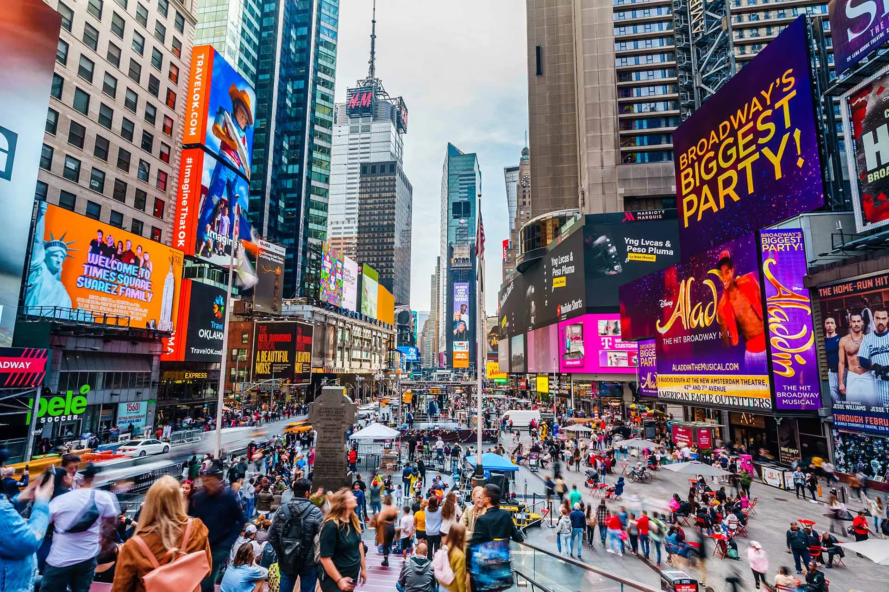
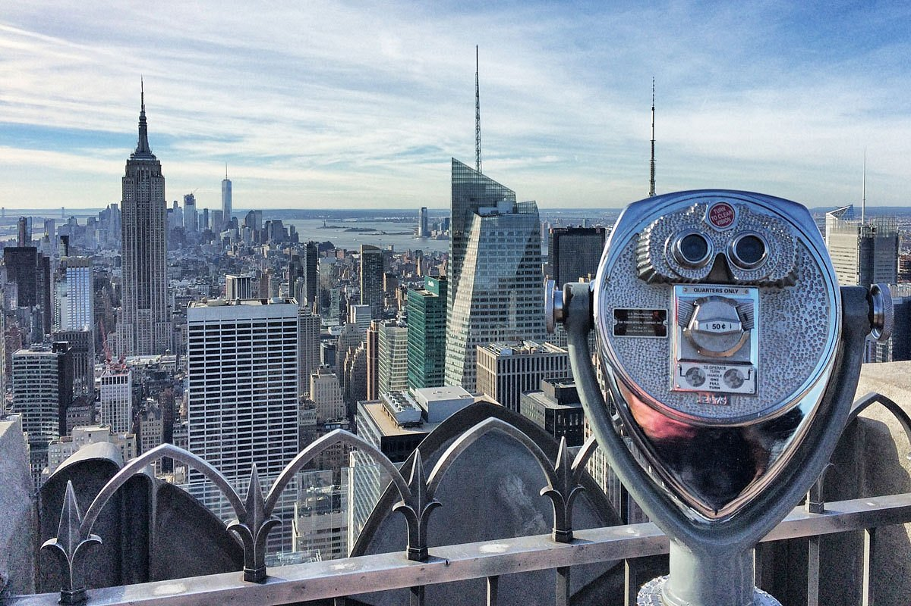

Destination Guide
New York
Skyscrapers, world-class museums, and a Broadway marquee on every corner — the city that never quite lets you catch your breath.
Why go
New York rewards walkers. In a single afternoon you can go from the top of Rockefeller Center to a food cart in Koreatown to a gallery at the Met, all without needing a car. It's dense, loud, and constantly rebuilding itself — which is exactly why the same trip never looks the same twice.
Where to Stay

The Kimberley Suite Hotel
All-suite rooms near Grand Central — good pick if you want a kitchenette and some room to spread out.

Park Lane
Central Park South, with skyline or park views depending on the room — a splurge that's easy to justify for a first trip.

Broadway Plaza Hotel
Theater District location — walk to most Broadway shows, with a lobby that punches above its price point.
New York, Before You Head Out
Book the Top of the Rock early
Sunset slots sell out days ahead in peak season.
Get a MetroCard or OMNY
Tap-to-pay OMNY now works at every turnstile — no card needed.
Pack for four seasons in one day
Wind off the rivers makes it colder than the forecast suggests.
The Skyline: Where to Go

Top of the Rock
The view everyone actually wants — Empire State Building included in the frame, which you can't get from the Empire State itself.

Empire State Building
The 86th-floor deck is the classic; the 102nd-floor add-on gets you above the antenna clutter for an extra fee.

Statue of Liberty & Ellis Island
Book the ferry in advance; the crown requires a separate, much earlier reservation.
Central Park
843 acres in the middle of Manhattan — big enough that most visitors only ever see a slice of it. The Mall and Jacqueline Kennedy Onassis Reservoir are the two spots worth building a walk around.

The Reservoir
A 1.58-mile running loop with an uninterrupted skyline view — best at golden hour.

The Mall
A straight, elm-lined promenade that turns gold in late October — one of the park's most photographed corners.
Lower Manhattan

Brooklyn Bridge
Walk it in either direction — the pedestrian path is elevated above traffic, and sunrise beats the crowds.

9/11 Memorial & Museum
The two reflecting pools are free to visit; the museum below requires a timed, ticketed entry.
Beyond Midtown

The High Line
An old elevated rail line turned 1.5-mile park through Chelsea — a good antidote to Midtown crowds.

Grand Central Terminal
Worth a stop even if you're not catching a train — the main concourse ceiling is a mural of the constellations.
Culture & Landmarks

The Met
Two million square feet of collection — pick two or three wings rather than trying to see it all in one visit.

NY Public Library
Free to enter — the Rose Main Reading Room alone is worth the stop between Bryant Park and Fifth Avenue.
Where to Eat

The Capital Grille
A reliable steakhouse pick for a special dinner — reserve ahead on weekends.

Gallagher's Steakhouse
A Theater District institution since 1927 — the dry-aging room out front is part of the draw.

Broadway Nights
The Theater District is a 20-block cluster of marquees between 41st and 54th. Same-day discount tickets through TKTS in Times Square can cut prices significantly for shows with unsold seats — worth checking before paying full price online.
Getting There

JFK Airport
The AirTrain connects every terminal to the subway and LIRR — budget 45-60 minutes into Manhattan outside rush hour.

Major carriers
United, Delta, and American all run frequent domestic and international routes into JFK and Newark.

Checking in
Self-service kiosks speed up bag check for most major carriers — worth using if you're not checking oversized luggage.
Worth the Trip: Niagara Falls
Not a day trip in the strict sense — Niagara Falls is roughly 6-7 hours from Manhattan by car, or a short domestic flight to Buffalo. But if you're extending your US trip, it's worth the detour.

Seneca Niagara Resort & Casino
Walking distance from the Falls, with rooms often cheaper than comparable Manhattan hotels — a practical base if you're staying overnight.
Good to Know
Getting around
The subway runs 24/7 and is almost always faster than a cab in Manhattan traffic.
Entry requirements
Most visitors need an ESTA under the Visa Waiver Program or a valid US visa — check well before booking flights.
Packing
Comfortable shoes matter more than anything else you'll pack — expect to walk 8-10 miles a day.